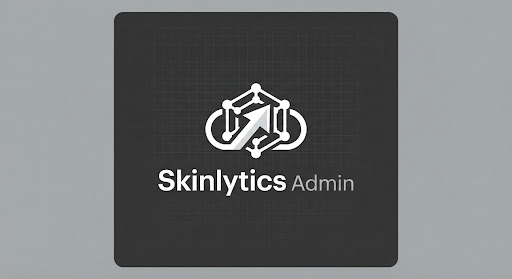

Platform Infrastructure
Manage global system settings, security protocols, and integration bridges.
api
Integrations & API Keys
Manage external access and webhooks

Stripe Payment Gateway
sk_live_••••••••••••••••3a9d
Active
OpenAI SkinAnalysis Engine
sk_proj_••••••••••••••••z8f2
Active
backup
Backup & Data Management
Database persistence and archival controls
Last Full Backup
Today, 04:00 AM
check_circle
Integrity Verified
Cloud Storage Usage
1.4 TB / 2.0 TB
security
System Security
Root-level protection
Global 2FA Policy
Mandatory for all admins
IP Whitelisting
Restricted to VPC range
flag
Feature Flags
Runtime toggle controls
Dark Mode Beta
100% Rollout
Skin-Tone AI v2.4
Shadow Testing
Auto-Report Generation
Disabled
Engine Performance
Optimal
lan
Infrastructure Health Monitor
Currently processing 4.2k requests per second across 12 distributed nodes. System heartbeat is nominal at 99.98% uptime for the last 30 days.
12ms
Avg Latency
0.02%
Error Rate